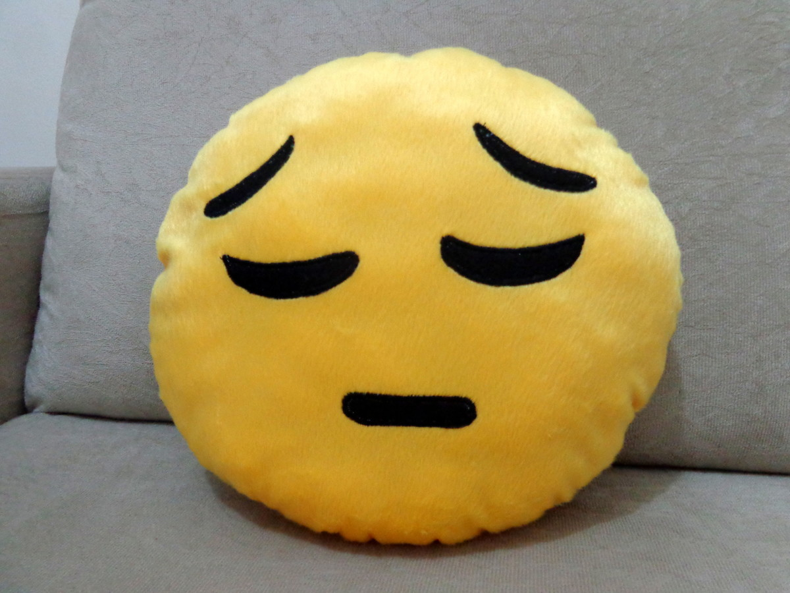
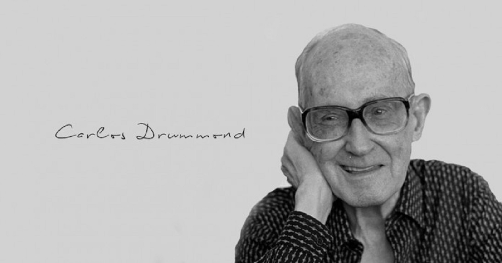

Bem vindo ao meu blog
Quando eu for, um dia desses,
Poeira ou folha levada
No vento da madrugada,
Serei um pouco do nada
Invisível, delicioso
Que faz com que o teu ar
Pareça mais um olhar,
Suave mistério amoroso,
Cidade de meu andar
(Deste já tão longo andar!)
E talvez de meu repouso...
Mario Quintana

Um poema como um gole d'água bebido no escuro.
Como um pobre animal palpitando ferido.
Como pequenina moeda de prata perdida para sempre na floresta noturna.
Um poema sem outra angústia que a sua misteriosa condição de poema.
Triste.
Solitário.
Único.
Ferido de mortal beleza.
Mario Quintana
Memória
Amar o perdido
deixa confundido
este coração.
Nada pode o olvido
contra o sem sentido
apelo do Não.
As coisas tangíveis
tornam-se insensíveis
à palma da mão
Mas as coisas findas
muito mais que lindas,
essas ficarão.
Carlos Drummond de Andrade
